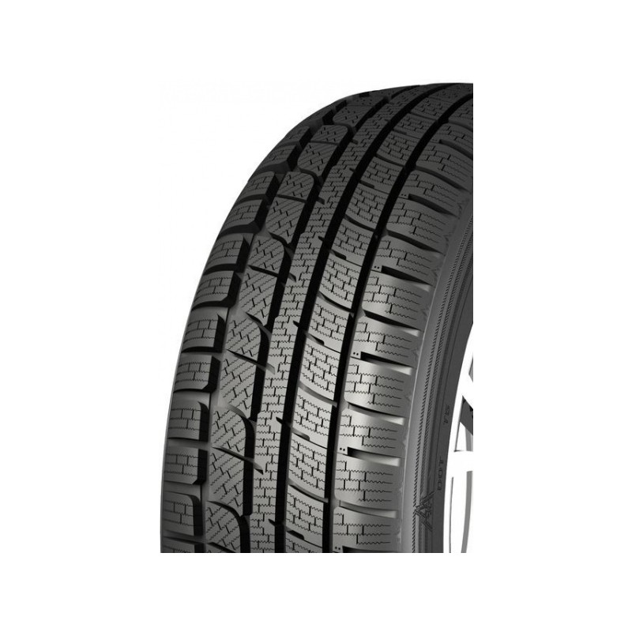

Welcome to padangos
Padangos internetu pigiau Vilniuje - Naujos !!! AKCIJA_GERA KAINA
2020.10.30 04:11
Laisvės pr. 123, Vilnius info@pirkitpadangas.lt Mėgstamiausios ( 0 )
Mėgstamiausių prekių sąrašas
Jūsų mėgstamiausiu sąraše prekių nėra Į mėgstamiausių sąrašą Palyginti ( 0 )Palyginimo sąrašas
Jūsų palyginimo sąraše prekių nėra Į palyginomo sąrašą +370 689 777 44 Prekių: 0 / 0,00 €Jūsų krepšelyje prekių: 0
Jūsų krepšelyje prekių nėra Į krepšelį Formuoti užsakymą Pagrindinis Automobilių padangos Vasarinės padangos Universalios padangos Žieminės padangos Informacija Mokėjimo būdai Pristatymo sąlygos Garantijos Papildoma padangų garantija Padangos pagal automobilį Padangų gamintojai Padangų dydžiai Straipsniai Taisyklės ir sąlygos Padangos išsimokėtinai Kontaktai Meniu Pagrindinis Automobilių padangos Vasarinės padangos Universalios padangos Žieminės padangos Informacija Informacija Mokėjimo būdai Pristatymo sąlygos Garantijos Papildoma padangų garantija Padangos pagal automobilį Padangų gamintojai Padangų dydžiai Straipsniai Taisyklės ir sąlygos Padangos išsimokėtinai Kontaktai+370 689 777 44
info@pirkitpadangas.lt
Padangų pristatymas Visoje Lietuvoje NAUJOS KARTOS PADANGOS ŠIUOLAIKINIAM VAIRUOTOJUI,VERTINANČIAM SAUGUMĄ IR KOMFORTĄ Peržiūrėti kolekciją Pristatymas visoje Lietuvoje PINIGŲ GRĄŽINIMO GARANTIJA Galimybė apmokėti grynais
Padangų paieška pagal dydį
Padangos internetu pigiau Vilniuje ir visoje Lietuvoje
Kiekvienas vairuotojas puikai žino, kad padangos tiesiogiai daro įtaką mūsų transporto priemonės važiavimo saugumui, komfortui, kuro ir aptarnavimo sąnaudoms bei aplinkos taršai. Tačiau neretai pamirštame, kad gautume maksimalią naudą, turime tinkamai investuoti į padangas.
Ar žinote, kad dabartinėje Lietuvos padangų rinkoje didžiąją dalį parduodamų padangų sudaro dėvėtos ar restauruotos padangos? Atkreipiame Jūsų dėmesį ir patariame: gerai apmąstykite, ko siekiate keisdami padangas, ir racionaliai pasiskaičiuokite ir planuokite savo biudžetą, kurį galite skirti pirkiniui.
Dažnu atveju mažesnių dydžių dėvėtų padangų kainos yra artimos naujų ekonominės klasės padangų kainoms internete. Įsigydami naujas padangas, Jūs visada gausite vienerių metų gamintojo garantiją, Jūsų įsigytos padangos bus "šviežios", o, svarbiausia, praėjus vienam vairavimo sezonui, Jums neteks vėl sukti galvos, kur ir už kiek įsigyti dar vieną padangų komplektą, nes naujos padangos sėkmingai tarnauja net keletą metų. Tad naujos kartos pažangios padangos - tiesiausias kelias į Jūsų ir Jūsų šeimos saugumą, ramybę ir komfortą!
Atminkite, padangos internetu beveik visada kainuoja pigiau. Taigi, Jūs mokate mažiau gaudami tą pačią vertę. Kaip taisyklė, perkant internetu, padangų kainos yra žemesnės nei tradicinėse parduotuvėse. Nepermokėdami beprasmiškai, įsigykite Jums tinkamą padangų modelį mūsų atnaujintoje internetinėje parduotuvėje čia ir dabar!
Populiarios prekės E C 73 dB Top prekė
SAILWIN ICEWINNER 868 265/65 R17 112T
64,00 €
Sezonas: Žieminės
Pristatymo laikas: 0-1 d.d.
Plačiau C C 71 dB Top prekėSAILWIN ICEWINNER 868 235/65 R17 108T
55,00 €
Sezonas: Žieminės
Pristatymo laikas: 0-1 d.d.
Plačiau C C 71 dB Top prekėSAILWIN ICEWINNER 868 235/60 R18 107H
56,00 €
Sezonas: Žieminės
Pristatymo laikas: 0-1 d.d.
Plačiau C C 71 dB Top prekėSAILWIN ICEWINNER 868 235/55 R17 103H
51,00 €
Sezonas: Žieminės
Pristatymo laikas: 0-1 d.d.
Plačiau E B 69 dB Top prekėROADCRUZA RA510 195/55 R15 85V
31,00 €
Sezonas: Vasarinės
Pristatymo laikas: 0-1 d.d.
Plačiau E B 69 dB Top prekėROADCRUZA RA710 205/50 R17 93W
37,00 €
Sezonas: Vasarinės
Pristatymo laikas: 0-1 d.d.
Plačiau E B 70 dB Top prekėROADCRUZA RA510 215/60 R16 99V
39,00 €
Sezonas: Vasarinės
Pristatymo laikas: 0-1 d.d.
Plačiau E B 69 dB Top prekėROADCRUZA RA710 215/55 R17 98W
43,00 €
Sezonas: Vasarinės
Pristatymo laikas: 0-1 d.d.
Plačiau C B 72 dB Top prekėROADMARCH PRIME UHP 08 275/35 R19 100Y
60,00 €
Sezonas: Vasarinės
Pristatymo laikas: 0-1 d.d.
Plačiau C B 71 dB Top prekėROADMARCH PRIME UHP 08 265/35 R18 97W
52,00 €
Sezonas: Vasarinės
Pristatymo laikas: 0-1 d.d.
Plačiau C B 71 dB Top prekėROADMARCH PRIME UHP 08 255/35 R18 94W
50,00 €
Sezonas: Vasarinės
Pristatymo laikas: 0-1 d.d.
Plačiau C B 70 dB Top prekėROADMARCH PRIME UHP 08 235/45 R18 98W
46,00 €
Sezonas: Vasarinės
Pristatymo laikas: 0-1 d.d.
Plačiau Pirkėjų atsiliepimaiLabai greitas kokybiškas ir informatyvus aptarnavimas. Vadybininkas puikiai išmano savo darbą, nes kartais mums moterims tikrai trūksta žinių apie mums nesuprantamus dalykus. Tad šiuo atveju labai pagelbėjo konsultacija, kurios dėka pavyko išsirinkti optimaliausią variantą. Esu labai patenkinta ir dėkoju pirkitpadangas.lt vyrukams.
Lina
Padangas užsakiau penktadienį po pietų, pirmadienį ryte jas kurjeris pristatė tiesiai mano nurodytu adresu, super greitis.
Marius
Gera parduotuve, ieskojau 1 vnt, daug imoniu nepardave. Cia nebuvo problemu, uzsisakiau ir pardave 1 vnt. Matosi, kad rupi visi klientai, o ne tik tie kurie perka 4 vnt padangu.
Andrius
Populiariausi padangų gamintojaiStraipsniai apie padangas, ką verta žinoti?
Kada reikia keisti vasarines padangas į žiemines?
Kiekvienas vairuotojas žino, jog padangas tenka keisti bent du kartus per metus. Vasarinėmis padangomis galima naudotis tik šiltuoju metų laiku. Artėjant šaltiems orams, jas reikėtų keisti. Tai padaryti yra būtina dėl kelių priežasčių. Pagrindinė priežastis yra ta, jog žiemos metu...
Kaip pačiam sumontuoti padangas?
Padangas tenka keisti bent kelis kartus per metus. Dažniausiai žmonės renkasi autoservisą. Padangų montavimas autoservise užtrunka vos kelias minutes, o kartais net ir mažiau. Profesionalūs mechanikai turi reikiamą įrangą, taip pat ir didelę patirtį, todėl tai padaryti gali greitai ir lengvai....
Kiek laiko tarnauja padangos?
Bent jau šiomis dienomis kol kas nėra automobilio, kuris neturėtų padangų. Padangos yra būtinos kiekvienam automobiliui. Deja, bet neretai padangos sukelia nemažai nesklandumų bei rūpesčių. Padangomis reikia rūpintis. Reikia nuolat tikrinti protektoriaus gylį, oro slėgį ir taip toliau....
Noriu gauti naujienas apie padangas
Susisiekite su mumis Kontaktai Laisvės pr. 123, LT-06118 Vilnius +370 689 777 44 info@pirkitpadangas.lt www.pirkitpadangas.lt Sekite mus© 2016-2020 MB "Ratneta". www.pirkitpadangas.lt
